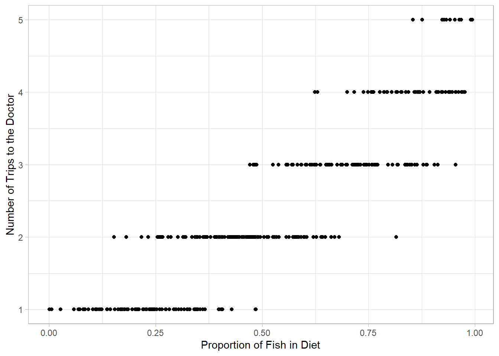
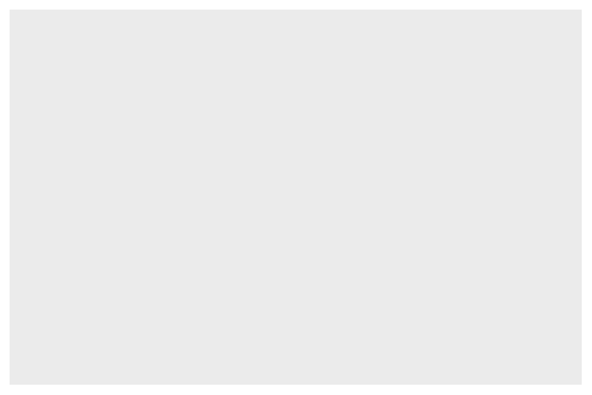
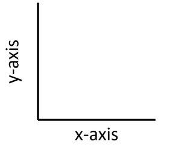
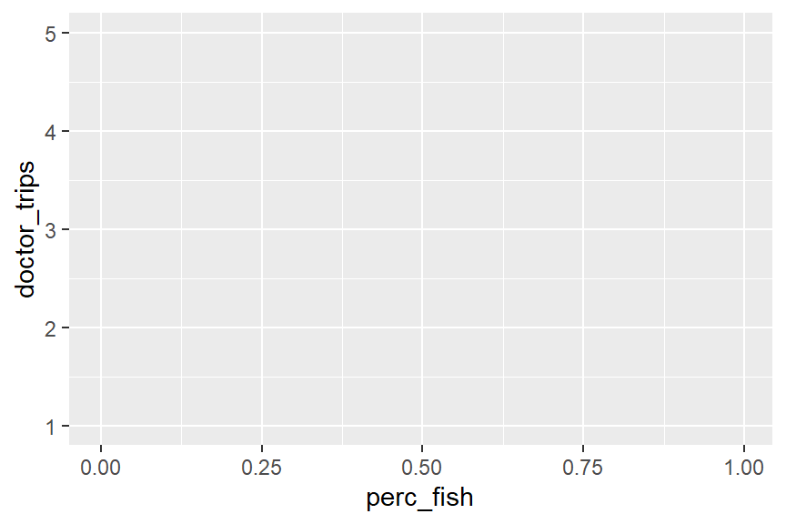
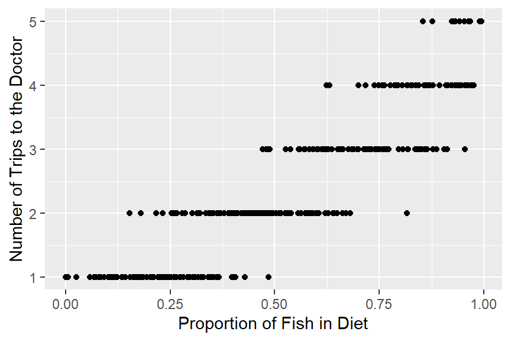
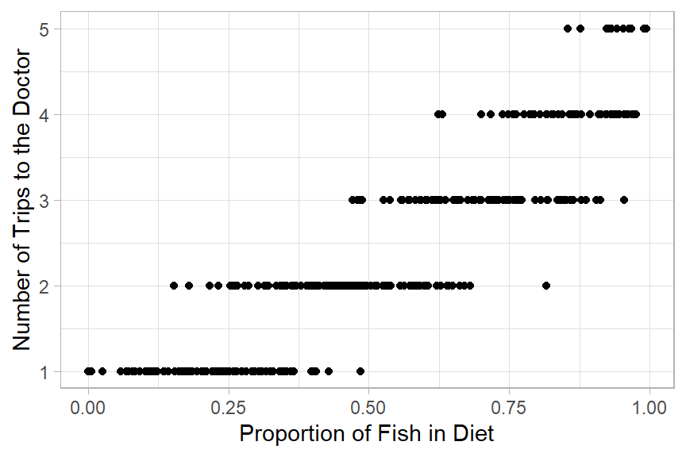
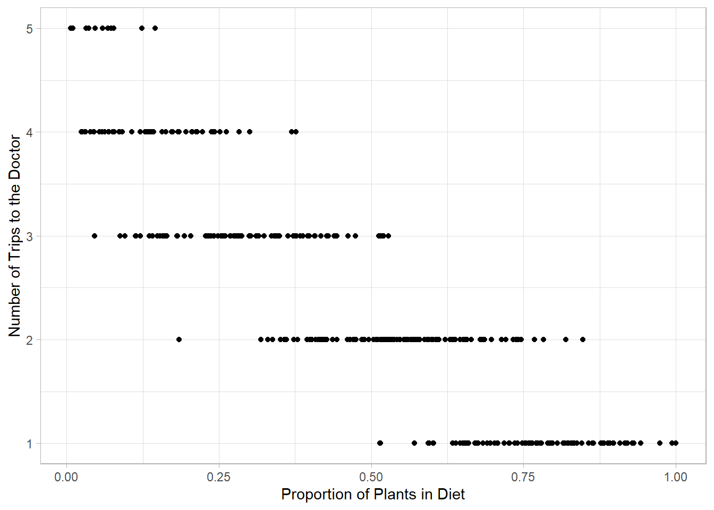

Students will be able to describe the structure of a ggplot2 plot.
Students will be able to build a scatter plot using ggplot2 by adding layers.
Students will be able to label axes and apply a theme to improve plot readability.
So far, we’ve used the base R plotting syntax. While quick plots in base R can still be really useful ways to do preliminary data exploration and visualization, we often want plots that go beyond the basics without too much additional effort. This is where ggplot2 comes in and really shines!
Example
Before we get into the nitty-gritty of how ggplot2 works, let’s run an example using the data about our sick crew members from earlier.
First, we need to load in both the tidyverse package and our data. We can remind ourselves what the data look like using the head() function.
# A tibble: 6 × 10
last first sex age height_cm weight_kg specialties perc_fish perc_plant
<chr> <chr> <chr> <dbl> <dbl> <dbl> <chr> <dbl> <dbl>
1 Gonzal… Ange… M 35 169. 51.4 Hydrology 0.994 0.00620
2 Navrat… John M 19 112. 96.3 Genetics 0.297 0.703
3 Duff Josh… M 26 133. 52.1 Horticultu… 0.514 0.486
4 Dottson Juli… M 36 140. 52.6 Climatology 0.686 0.314
5 al-Sul… Mune… M 26 194. 52.2 Geology 0.292 0.708
6 Galleg… Rich… M 29 153. 98.1 Climatology 0.329 0.671
# ℹ 1 more variable: doctor_trips <dbl>
Here is code to make a scatter plot of the relationship between proportion of fish in diets and how many trips to the doctor.
ggplot(sick, aes(x = perc_fish, y = doctor_trips)) +geom_point() +labs(x ="Proportion of Fish in Diet",y ="Number of Trips to the Doctor") +theme_light()

Nice, right? In the next few lessons, we will really start to see the power of ggplot2. For now, though, let’s focus on how this works.
ggplot2
The package ggplot2 is part of the tidyverse.
Here are some resources you might find helpful now or in the future:
The gg in ggplot2 stands for “Grammar of Graphics.” The “grammar” part is based on an idea that all statistical plots have the same fundamental features: data and mapping (and specific components of mapping).
The design is that you work iteratively, building up layer upon layer until you have your final plot.
Every ggplot2 plot is built from the same few pieces. You start with the ggplot() function, tell it which data to use and how to map your variables to the axes inside aes(), then add a layer with + to choose the kind of plot:
ggplot(data = your_data, aes(x = x_variable, y = y_variable)) +geom_type()
Here, your_data is the data frame you’re plotting, x_variable and y_variable are the columns you want on each axis, and geom_type() is the kind of plot (for example, geom_point() for a scatter plot). Every extra piece, like axis labels or a theme, gets added as another layer with +.
Let’s build up to the plot above one step at a time.
Specify the data
ggplot(data = sick)

# ggplot() always starts by drawing a blank coordinate system.# Nothing will appear until you add at least one geometric layer (a geom function).
Most plots display data relative to two axes: the x-axis (horizontal) and the y-axis (vertical).

You will definitely want to memorize which axis is which!
Specify the x-axis (horizontal) and the y-axis (vertical) in the aes() function.
ggplot(data = sick, mapping =aes(x = perc_fish, y = doctor_trips))

Add the type of plot we want using a geom function. For a scatter plot, we use geom_point().
Clean up the axis labels with the labs() function so they are more easily interpreted.
ggplot(data = sick, mapping =aes(x = perc_fish, y = doctor_trips)) +geom_point() +labs(x ="Proportion of Fish in Diet",y ="Number of Trips to the Doctor")

Choose a theme function to make the plot more aesthetically pleasing.
# theme_bw(), theme_classic(), and theme_light() are good optionsggplot(sick, aes(x = perc_fish, y = doctor_trips)) +geom_point() +labs(x ="Proportion of Fish in Diet",y ="Number of Trips to the Doctor") +theme_light()

In Summary:
we always start with the ggplot() function
we specify the dataset we want to use
we specify the mappings (x- and y-axes and some other bits) with the aes() function
we use a + to add layers
we specify the type of plot, or geom using one of many possible geom functions
we use the labs() function to clean up the labels
we add a theme function to make it more visually readable
Let’s Practice
Using the sick data, build a ggplot2 scatter plot that shows the relationship between the proportion of plants in a crew member’s diet (perc_plant) and their number of doctor trips (doctor_trips). Make sure to label your axes clearly and apply a theme.
# Write your code here
Answer:
ggplot(sick, aes(x = perc_plant, y = doctor_trips)) +geom_point() +labs(x ="Proportion of Plants in Diet",y ="Number of Trips to the Doctor") +theme_light()

Instructor Note: The plant plot shows the inverse pattern from the fish plot, higher plant consumption pairs with fewer doctor visits. Since perc_fish and perc_plant sum to 1, this is expected. This is a good moment to point out that both plots tell the same story from opposite angles, and to ask students which variable they think is actually driving the illness.